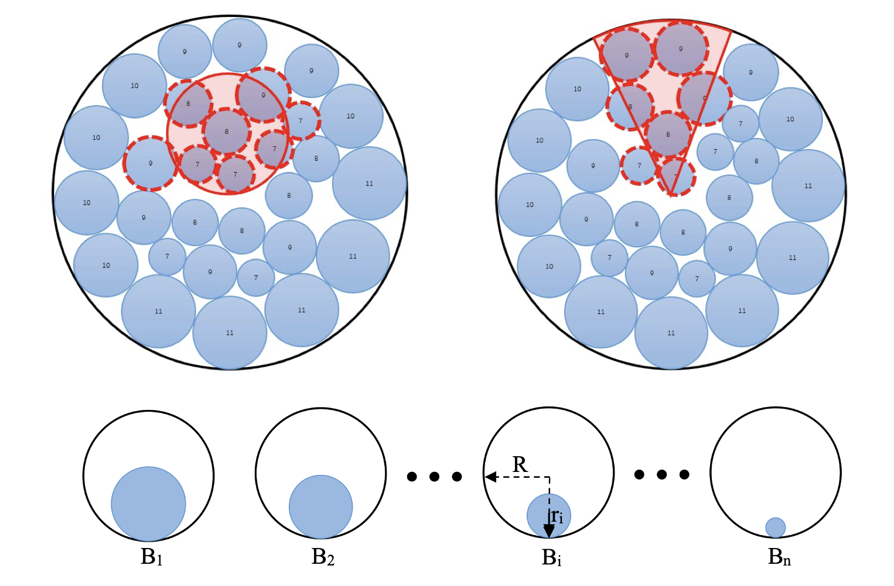

Fei Ni 倪飞Ph.D. CandidateEmail: fei_ni at tju dot edu dot cn
|
 |

Research Interests
News
Publications (Google Scholar)

|
AdaptDiffuser: Diffusion Models as Adaptive Self-evolving Planners.
Zhixuan Liang, Yao Mu, Mingyu Ding, Fei Ni, Masayoshi Tomizuka, Ping Luo. The Fortieth International Conference on Machine Learning ( ICML ), Oral, 2023. (CCF-A) |
| MetaDiffuser: Diffusion Model as Conditional Planner for Offline Meta-RL.
Fei Ni, Jianye Hao, Yao Mu, Yifu Yuan, Yan Zheng, Bin Wang, Zhixuan Liang. The Fortieth International Conference on Machine Learning ( ICML ), 2023. (CCF-A) |
|
| EUCLID: Towards Efficient Unsupervised Reinforcement Learning with Multi-choice Dynamics Model.
[PDF]
[arXiv]
[Code] Yifu Yuan, Jianye Hao, Fei Ni, Yao Mu, Yan Zheng, Yujing Hu, Jinyi Liu, Yingfeng Chen, Changjie Fan. The 11th International Conference on Learning Representations ( ICLR ), 2023. |
|

|
SplitNet: A Reinforcement Learning based Sequence Splitting Method for the MinMax Multiple Travelling Salesman Problem.
[PDF]
[arXiv]
[Code] Hebin Liang, Yi Ma, Zilin Cao, Tianyang Liu, Fei Ni, Zhigang Li, Jianye Hao. Thirty-Sixth AAAI Conference on Artificial Intelligence ( AAAI ), 2022. (CCF-A) |
| A Multi-Graph Attributed Reinforcement Learning based Optimization Algorithm for Large-scale Hybr id Flow Shop Scheduling Problem. Fei Ni, Jianye Hao, Jiawen Lu, Xialiang Tong, Mingxuan Yuan, Jiahui Duan, Yi Ma, Kun He Proceedings of the 27th ACM SIGKDD Conference on Knowledge Discovery & Data Mining ( KDD ), 2021: 3441-3451. (CCF-A) |
|

|
Adaptive simulated annealing with greedy search for the circle bin packing problem. Kun He, Kevin Tole, Fei Ni, Yong Yuan, Linyun Liao. [Project Page] [arXiv] [PDF] [Code] Computers & Operations Research ( COR ), in press, 2021. (SCI Q1, IF=5.159) |
|  | Adaptive simulated annealing with greedy search for the circle bin packing problem.
[Code]
[PDF] Yong Yuan, Kevin Tole, Fei Ni, Kun He, Zhengda Xiong, Jinfa Liu. Computers & Operations Research ( COR ), in press, 2022. (SCI Q1, IF=5.159) |
Awards
Industrial Experience
-
Noah Ark's Lab, Decision and Reasoning Lab, Huawei.Aug. 2022 –
Research Intern
Topic: Reinforcement learning, Robotics Learning
-
Noah Ark's Lab, Enterprise Intelligence Lab, Huawei.Jun. 2020 – Feb. 2021
Research Intern
Topic: Reinforcement learning, Scheduling Problem, Combinatorial Optimization
Academic Experience:Reviewer
Invited Talks
-
Alibaba DAMO AcademicApr. 2023
Title: Semantic-Guided Zero-Shot Learning
© Fei Ni | Last updated: Augst 01, 2022